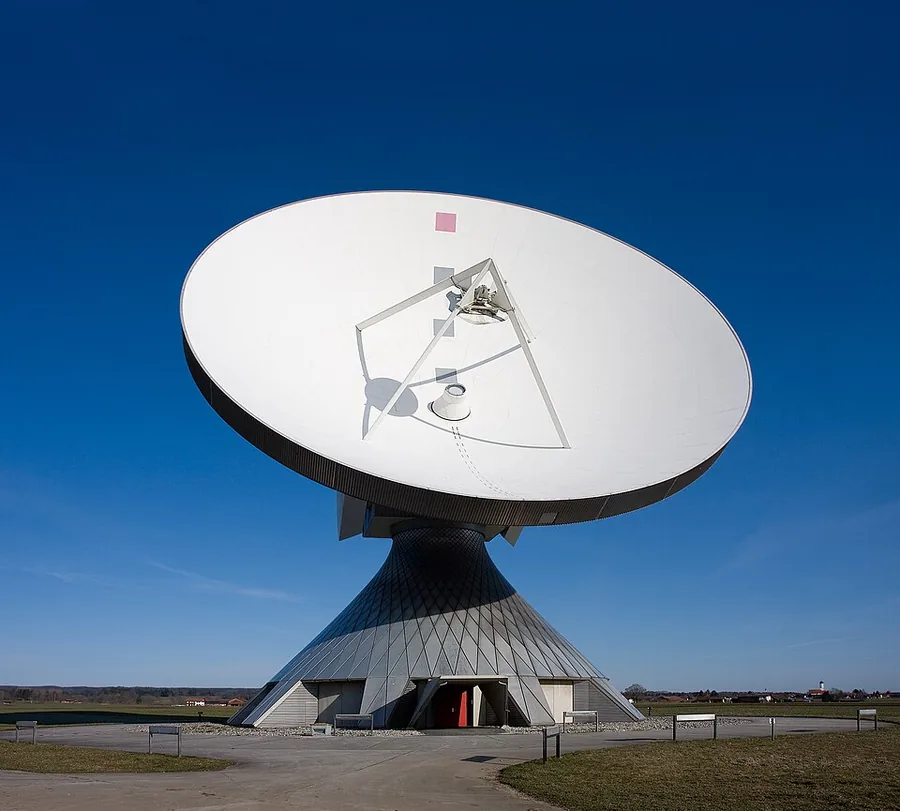

Itty Bitty Telescope (IBT)
The IBT is an educational kit that lets students build a working radio telescope tuned to the 21 cm hydrogen line. Point the dish at the Milky Way and you can detect the faint hiss of neutral hydrogen gas — the same signal that revealed the structure of our galaxy to early radio astronomers in the 1930s.
~1 m dish | 21 cm hydrogen line | Educational kit
Learn more ↗